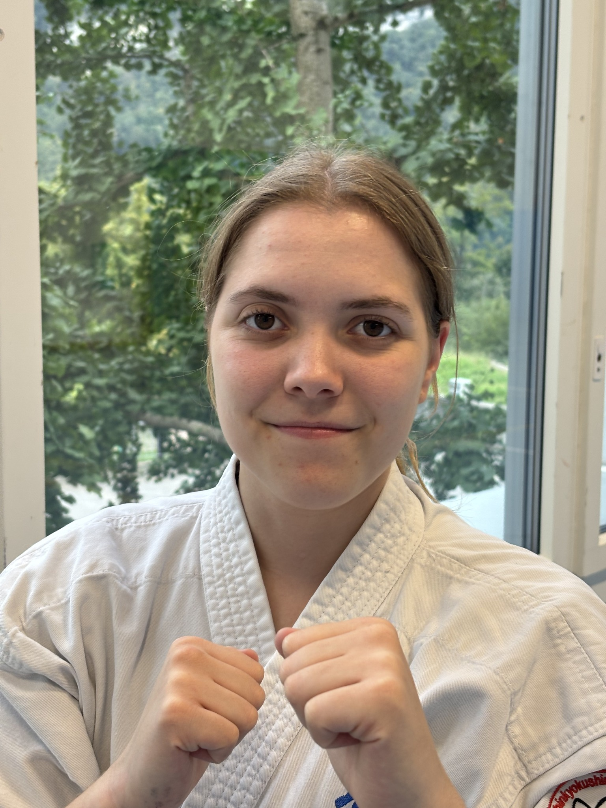
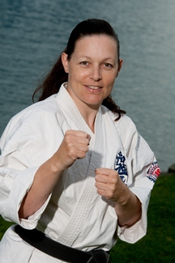
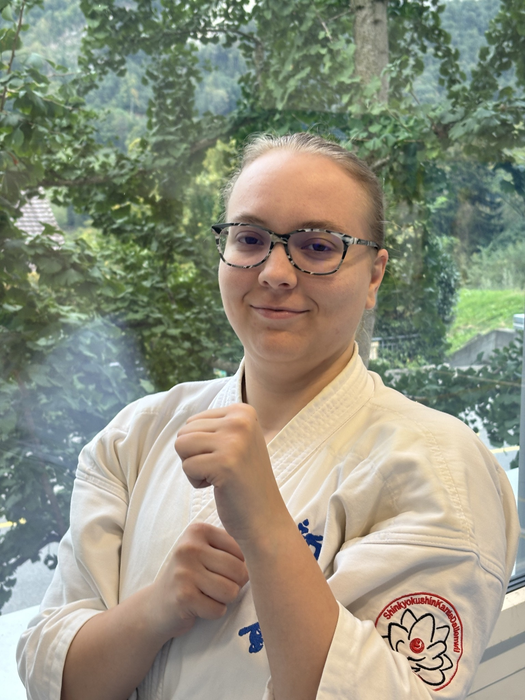
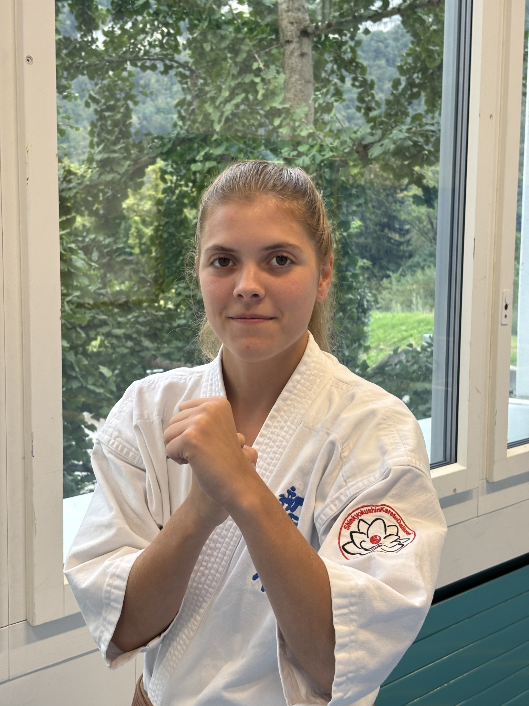
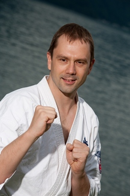
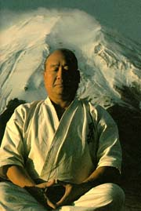

Respekt
Wertschätzung und Achtung.
Gemeinsam trainieren.
Respekt leben.
Stärke entwickeln.
Wertschätzung und Achtung.
Körper, Geist und Charakter.
Gemeinsam als Team wachsen.
Fitness und Wohlbefinden.
Ob Kinder oder Erwachsene – bei uns findet jeder das passende Training. Werde Teil unserer Karate-Familie.
Spielerisch lernen, Selbstvertrauen aufbauen und Spass an Bewegung entwickeln.
Effektives Ganzkörpertraining, Selbstverteidigung und Ausgleich zum Alltag.
Turnhalle Dallenwil
6383 Dallenwil
Ein Probetraining ist nach vorheriger Anmeldung möglich.
Alles auf einer Seite
Die wichtigsten Inhalte findest du direkt hier auf der Startseite. Die einzelnen Seiten bleiben weiterhin über das Menü erreichbar.
Karateverein Dallenwil
Geschichte, Vorstand, Mitgliedschaft und unser gemeinsamer Karateweg.
Gemeinsam für unseren Verein
Der Vorstand organisiert das Vereinsleben und schafft die Grundlage für Training, Gemeinschaft und Weiterentwicklung.

1. Kyu
Profil ansehen →
3. Dan
Profil ansehen →
1. Kyu
Profil ansehen →
1. Kyu
Profil ansehen →
1. Kyu
Profil ansehen →Mitgliedschaft
Unsere Mitglieder profitieren von qualifiziertem Unterricht, einer familiären Atmosphäre und einem abwechslungsreichen Trainingsangebot für Kinder, Jugendliche und Erwachsene.
Möchtest du Shinkyokushin Karate unverbindlich kennenlernen? Nimm Kontakt mit uns auf – wir freuen uns darauf, dich bei einem Probetraining persönlich willkommen zu heissen.
Jetzt Probetraining vereinbarenGemeinsam auf dem Karateweg
Der Shinkyokushin Karateverein Dallenwil steht seit über 30 Jahren für traditionelles Karate, persönliche Weiterentwicklung und ein starkes Miteinander. Bei uns trainieren Kinder, Jugendliche und Erwachsene gemeinsam – unabhängig von Alter, Erfahrung oder sportlichen Voraussetzungen.
Im Mittelpunkt stehen nicht nur Technik und körperliche Fitness, sondern auch Werte wie Respekt, Disziplin, Fairness und gegenseitige Unterstützung. Unser Ziel ist es, Menschen auf ihrem persönlichen Karateweg zu begleiten und ihnen ein Umfeld zu bieten, in dem sie sich sportlich und menschlich weiterentwickeln können.
Unsere Geschichte
Die Geschichte unseres Vereins begann im Januar 1994, als Adrian Schön (2. Dan) gemeinsam mit seinen Geschwistern Daniela Schön und Edgar Schön sowie Robert Wyss den ersten Anfängerkurs organisierte.
Bereits dieser erste Kurs stiess auf grosses Interesse. 25 neugierige und motivierte Sportlerinnen und Sportler entschieden sich, den Weg des Karate zu beginnen. Einige von ihnen trainieren noch heute mit grosser Freude im Verein und engagieren sich mittlerweile selbst als Trainer oder Vorstandsmitglieder.
Der grosse Zuspruch führte dazu, dass bereits ein Jahr später der Karateverein Dallenwil offiziell gegründet wurde.
Nachwuchs
Ein wichtiger Meilenstein folgte 1996 mit der Einführung des Kinderkarate.
Seitdem erhalten Kinder ab sechs Jahren die Möglichkeit, Karate auf spielerische und altersgerechte Weise kennenzulernen. Dabei lernen sie nicht nur Techniken, sondern entwickeln gleichzeitig Konzentration, Selbstvertrauen, Koordination und Verantwortungsbewusstsein.
Die Leitung des Kindertrainings übernahm Daniela Wyss-Schön (3. Dan). Mit ihrer langjährigen Erfahrung, grossem Engagement und viel Geduld begleitet sie seit vielen Jahren zahlreiche Kinder auf ihrem Karateweg.
Im Laufe der Jahre wurde sie durch Thomas Odermatt (1. Kyu) unterstützt, der sich seit vielen Jahren mit grosser Leidenschaft für die Nachwuchsförderung einsetzt. Gemeinsam sorgen sie dafür, dass die Kinder in einer motivierenden, sicheren und familiären Atmosphäre trainieren können.
Wettkampf und Leistung
Der Shinkyokushin Karateverein Dallenwil durfte in seiner Vereinsgeschichte zahlreiche sportliche Erfolge feiern.
Diese Erfolge sind das Resultat von kontinuierlichem Training, grossem persönlichem Einsatz und der Leidenschaft unserer Sportlerinnen und Sportler.
Verantwortungsvolle Förderung
Die Ausbildung von Kindern und Jugendlichen besitzt in unserem Verein einen besonders hohen Stellenwert. Als anerkannter Jugend+Sport (J+S)-Verein orientieren wir uns an den pädagogischen Grundsätzen von Jugend+Sport. Dabei begleiten wir junge Menschen sowohl in ihrer sportlichen als auch in ihrer persönlichen Entwicklung.
Karate bedeutet für uns mehr als das Erlernen von Techniken: Respekt, Selbstbeherrschung, Fairness und gegenseitige Unterstützung gehören zum gemeinsamen Karateweg. Diese Haltung steht in enger Übereinstimmung mit dem Ausbildungsverständnis von J+S, das die ganzheitliche Entwicklung, die Vorbildrolle der Leitenden und die Zugehörigkeit zur Gruppe betont. Karate-Philosophie und J+S-Grundsätze sind dabei nicht in allen Punkten identisch – sie ergänzen sich in wesentlichen Zielen.
Unsere Trainerinnen und Trainer übernehmen eine Vorbildrolle. Ein lernförderliches Umfeld, altersgerechte Aufgaben und Rücksicht auf den Entwicklungsstand helfen jungen Menschen, Fortschritte zu machen. Leistung soll motivieren; die Gesundheit und das Wohlergehen der Teilnehmenden bleiben dabei im Mittelpunkt.
Im Kinder- und Jugendtraining trainieren wir kein Vollkontakt. Ebenso nehmen unsere Kinder und Jugendlichen nicht an Vollkontaktturnieren teil.
Die J+S-Sicherheitsvorgaben für Karate betonen angepasste Belastung, kontrollierte Partnerübungen und faires Verhalten. Für das Kindertraining sehen sie bei Angriffen mit Arm- und Fusstechniken keinen Körperkontakt vor.
So verbinden wir die Werte unseres Karate mit einer verantwortungsvollen Nachwuchsförderung: Junge Menschen sollen sich sicher bewegen, als Teil der Gemeinschaft erleben und Freude an ihrem eigenen Fortschritt entwickeln.
Mehr zu den Grundlagen: J+S-Ausbildungsverständnis · Prävention und gesunde Entwicklung · J+S-Merkblatt Unfallprävention im Karate (PDF)
Was uns verbindet
Unser Verein ist weit mehr als ein Ort zum Trainieren.
Viele unserer Mitglieder begleiten den Verein seit vielen Jahren. Freundschaften entstehen über Generationen hinweg, neue Mitglieder werden herzlich aufgenommen und erfahrene Karateka unterstützen die jüngeren auf ihrem Weg.
Diese familiäre Atmosphäre macht den Shinkyokushin Karateverein Dallenwil zu einem Ort, an dem sich Menschen wohlfühlen und gemeinsam wachsen können.
Ein besonderer Meilenstein
2024 durfte der KARATE Verein Dallenwil sein 30-jähriges Jubiläum feiern.
Dieses besondere Jubiläum steht für drei Jahrzehnte engagierte Vereinsarbeit, erfolgreiche Nachwuchsförderung und die gemeinsame Leidenschaft für das Shinkyokushin Karate.
Seit der Gründung im Jahr 1994 hat sich unser Verein kontinuierlich weiterentwickelt. Zahlreiche Kinder, Jugendliche und Erwachsene haben in dieser Zeit den Weg zum Karate gefunden und dabei nicht nur sportliche Fähigkeiten erworben, sondern auch Werte wie Respekt, Disziplin, Fairness und Durchhaltevermögen kennengelernt und gelebt.
Viele unserer Mitglieder begleiten den Verein seit vielen Jahren. Einige engagieren sich heute selbst als Trainerinnen und Trainer oder übernehmen Verantwortung im Vorstand. Dieses aussergewöhnliche Engagement macht unseren Verein zu einer starken Gemeinschaft und bildet die Grundlage für eine erfolgreiche Zukunft.
Mit Stolz und Dankbarkeit blicken wir auf die vergangenen 30 Jahre zurück und freuen uns darauf, auch in Zukunft Menschen jeden Alters für das Shinkyokushin Karate zu begeistern.
Ein neues Kapitel
Mit dem 30-jährigen Jubiläum im Jahr 2024 begann für den Shinkyokushin Karateverein Dallenwil zugleich ein neues Kapitel. Mit Jaqueline Migliaccio, Claudia Erni und Michelle Erni erklärten sich drei engagierte Vereinsmitglieder bereit, Verantwortung im Vorstand zu übernehmen und die Zukunft unseres Vereins aktiv mitzugestalten.
Dieses Engagement verdient besondere Anerkennung. In einer Zeit, in der es für viele Vereine immer schwieriger wird, Menschen für ehrenamtliche Aufgaben zu gewinnen, ist ihre Bereitschaft alles andere als selbstverständlich. Mit ihrem Einsatz leisten sie einen wichtigen Beitrag dazu, dass der Shinkyokushin Karateverein Dallenwil auch in Zukunft ein Ort bleibt, an dem Kinder, Jugendliche und Erwachsene gemeinsam trainieren, voneinander lernen und die Werte des Shinkyokushin Karate leben können.
Gemeinsam mit den bisherigen Vorstandsmitgliedern bilden sie ein motiviertes Team, das den Verein mit neuen Ideen, Verantwortungsbewusstsein und viel Herzblut weiterentwickelt. Damit schaffen sie die Grundlage dafür, dass unser Verein auch nach über 30 Jahren erfolgreich bestehen und seine Geschichte weiterschreiben kann.
Karate kennenlernen
Besuche uns bei einem unverbindlichen Schnuppertraining in Dallenwil.
Unser Karateweg
Herkunft, Werte, Training, Dojo-Eid und die Geschichte von Sosai Masutatsu Oyama.
Grundlagen
Karate – die Kunst der „leeren Hand“ – entwickelte sich über viele Jahrhunderte aus unterschiedlichen ostasiatischen Kampfkunsttraditionen. Im Laufe der Zeit entstanden verschiedene Stilrichtungen. Eine der bekanntesten und anspruchsvollsten davon ist Kyokushin Karate.
Der Begriff Kyokushin bedeutet sinngemäss „Stil der letzten Wahrheit“. Er steht für Ehrlichkeit, Disziplin, Ausdauer und den unermüdlichen Willen, sich körperlich und geistig weiterzuentwickeln.
Aus Kyokushin entstand später die Organisation Shinkyokushinkai, welche diese Werte heute weltweit vertritt. Unser Verein gehört dieser internationalen Stilrichtung an und verbindet traditionelles Karate mit modernem und verantwortungsvollem Training für Kinder und Erwachsene.
Jeden Menschen unabhängig von Alter oder Geschlecht individuell im mentalen und körperlichen Bereich zu fördern.
Entwicklung
Kyokushin Karate wurde durch Sosai Masutatsu Oyama geprägt. Sein Anspruch war ein Karate, das nicht nur aus Technik besteht, sondern den ganzen Menschen fordert: körperlich, mental und charakterlich.
Nach Oyamas Tod entwickelten verschiedene Organisationen sein Vermächtnis weiter. Shinkyokushinkai bewahrt die zentralen Prinzipien des Kyokushin und verbindet sie mit einer zeitgemässen, internationalen Verbandsarbeit.
Der Karateweg
Shinkyokushin ist mehr als ein Kampfsport. Im Mittelpunkt stehen Respekt, Aufrichtigkeit, Ausdauer, Selbstbeherrschung und Bescheidenheit. Die körperliche Herausforderung dient dabei auch der persönlichen Entwicklung.
Höflichkeit gegenüber Trainingspartnern, Lehrpersonen und Mitmenschen.
Regelmässiges Training und die Bereitschaft, an sich zu arbeiten.
Schwierigkeiten annehmen und den eingeschlagenen Weg weitergehen.
Die eigene Entwicklung erkennen, ohne sich über andere zu stellen.
Training
Shinkyokushin verbindet eine traditionelle Budo-Ausbildung mit intensivem körperlichem Training. Zum Ausbildungsweg gehören:
Bei grossen internationalen Vollkontaktturnieren wird traditionell teilweise ohne Gewichtsklassen gekämpft. Das Tameshiwari kann je nach Wettkampfreglement zur Qualifikation oder bei Punktegleichheit zur Siegerbestimmung beitragen.
Nachwuchs
Die Ausbildung junger Karateka besitzt einen besonders hohen Stellenwert. In der Schweiz ist Karate als Sportfach bei Jugend+Sport (J+S) aufgenommen. Das Training orientiert sich an altersgerechten Sicherheits- und Ausbildungsrichtlinien.
Der Schwerpunkt liegt auf Technik, Koordination, Selbstvertrauen, Respekt und einer verantwortungsvollen Einführung in den Wettkampfsport. Sicherheit steht jederzeit im Mittelpunkt.
Unser Versprechen
Der Dojo-Eid – Dojo Kun – erinnert uns daran, dass Karate weit über Technik und körperliche Stärke hinausgeht. Er begleitet Karateka auf ihrem Weg zu Respekt, Disziplin, Ausdauer und Bescheidenheit.
Romanisierte japanische Fassung
Die Bedeutung für unseren Karateweg
Der Begründer des Kyokushin Karate

Masutatsu Oyama wurde am 27. Juli 1923 im Süden Koreas geboren. Bereits in jungen Jahren entwickelte er eine grosse Leidenschaft für die Kampfkünste und beschäftigte sich mit chinesischem Kempo, Judo und Boxen.
Beeindruckt von Grossmeister Gichin Funakoshi begann Oyama intensiv in dessen Dojo an der Takushoku-Universität zu trainieren. Im Alter von zwanzig Jahren erreichte er den 4. Dan. Danach vertiefte er seine Kenntnisse im Judo und erreichte innerhalb weniger Jahre auch dort den 4. Dan.
Inspiriert von den Schriften des berühmten Samurai Miyamoto Musashi zog sich Oyama im Alter von 23 Jahren gemeinsam mit seinem Begleiter Yashiro auf den Berg Minobu in Japan zurück.
In völliger Abgeschiedenheit trainierten die beiden unermüdlich. Nach einem halben Jahr verliess Yashiro den Berg, doch Oyama setzte sein Training fort – bis zu zwölf Stunden am Tag, sieben Tage in der Woche.
Nach vierzehn Monaten kehrte Oyama zurück. Er war körperlich und geistig gestärkt und gewann anschliessend die japanischen Meisterschaften.
Oyamas Training war nicht allein auf körperliche Stärke ausgerichtet. Es diente der Entwicklung von Charakter, Selbstbeherrschung und einem unbeugsamen Geist.
Ab 1950 machte Masutatsu Oyama durch spektakuläre Kraftdemonstrationen auf seinen Kampfstil aufmerksam. 1952 reiste er erstmals in die USA und machte sein Karate durch zahlreiche Vergleichskämpfe international bekannt.
1953 eröffnete Oyama sein erstes Dojo. Im Jahr 1964 wurde das heutige Welthauptquartier offiziell eingeweiht und sein Kampfstil erhielt den Namen Kyokushin – „Stil der letzten Wahrheit“.
Masutatsu Oyama wurde von seinen Schülern mit dem Ehrentitel Sosai angesprochen. Das bedeutet sinngemäss Präsident oder Gründer. Seine Lehre beeinflusst bis heute Karateka auf der ganzen Welt.
Geburt von Masutatsu Oyama
Intensives Karate- und Judotraining
Rückzug zum Training in die Berge
Eröffnung des ersten Dojos
Offizielle Bezeichnung Kyokushin
Symbolik

Das Symbol des Kyokushin stammt aus der Kata Kanku. Der Name bedeutet übersetzt „Zum Himmel blicken“.
Während dieser Kata werden die Hände hochgehoben. Daumen und Zeigefinger beider Hände bilden einen Kreis, durch den symbolisch zum Himmel geschaut wird.
Sie bilden die Finger und stehen für Endgültigkeit sowie den höchsten Entwicklungsstand.
Sie bilden die Handgelenke und symbolisieren Kraft und Stabilität.
Er versinnbildlicht Unendlichkeit und eine unendliche innere Tiefe.
Er steht für Kontinuität, Harmonie und die Kreisbewegung.
Unsere Geschichte
Der Karateverein Dallenwil wurde im Januar 1994 von Adrian Schön, gemeinsam mit Daniela und Edgar Schön sowie Robert Wyss, gegründet.
Seit der Gründung stehen ein altersgerechtes Training, persönliche Entwicklung und eine starke Gemeinschaft im Zentrum. Der Verein ist J+S-anerkannt.
Karate kennenlernen und unverbindlich mittrainieren.
Schnuppertraining →